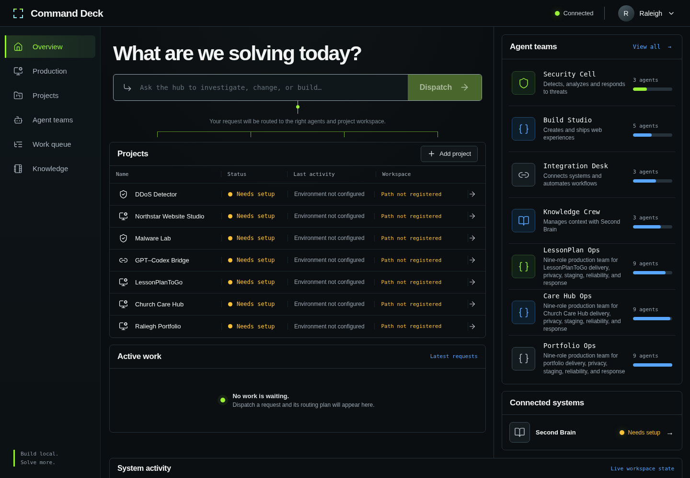

Development · Project documentation
Command Deck
A local control centre for managing development projects, routing work to specialist teams, reviewing proposed changes, and searching a connected knowledge vault.

Purpose and outcome
Brings project context, work requests, and reviewed changes into one operator workspace.
System architecture
React and Vite provide the interface. A loopback-only Express API owns the project registry, local work records, guarded file access, and connector envelopes. An MCP server exposes the same guarded API to compatible clients.
Implemented capabilities
- Project registry and workspace browsing with path protections
- Durable work queue and specialist team routing
- Reviewed changesets with explicit APPLY confirmation
- Production views, audit results, and release gates
Typical workflow
- Register a permitted project and assign its specialist team.
- Browse project status or submit a work request.
- Review a proposed changeset against the original file hash.
- Apply only after explicit confirmation; inspect audit and release-gate evidence.
Evidence and validation
The portfolio screenshot was captured from a local run of the repository with no provider credentials. No project changes, external messages, provider audits, or deployments were triggered.
Limitations and operating context
Local workspace features require connected checkouts. Hosted monitoring is a separate scaffold that needs scoped provider configuration; its presence does not establish that monitoring is deployed.
Prepared from the project repository and the captured application screen on 4 October 2026. Descriptions document the system’s capabilities; the evidence above states what was exercised for this portfolio update.
← Back to project case studies